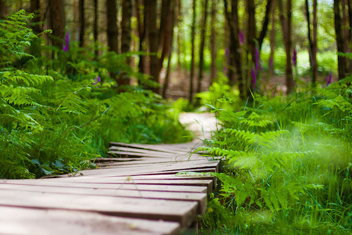

MONKEY TRAIL
Get to know this 16.1-km loop trail near Keithville, Louisiana. Generally considered a moderately challenging route, it takes an average of 3 h 49 min to complete. This is a popular trail for hiking, horseback riding, and mountain biking, but you can still enjoy some solitude during quieter times of day. The trail is open year-round and is beautiful to visit anytime. Dogs are welcome, but must be on a leash.
Today's program:
- 9h00am : Hiking
- 11h49am : Wild life
WHERE WILL YOU FIND IT?
The Monkey Trail is to the west of the main entrance.